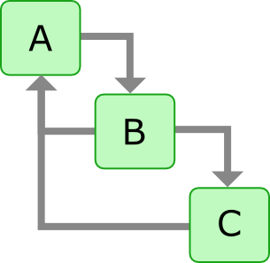

Installation and Introduction
Created by The OpenMDAO Team
Standard Pre-Reqs
- Python 2.7
- Numpy
- Scipy
- MatPlotLib
- (Windows) pywin32
Hackathon Pre-Reqs
- Git
- Compilers!
- Windows: Mingw
- Mac OSX: Xcode + gFortran
- Linux: gFortran
- Clone of OpenMDAO Repo
git clone -b hifi https://github.com/OpenMDAO/OpenMDAO-Framework.git
MacOS "Pro Tip": Homebrew
Full InstructionsShort version:
brew install python
pip install numpy
brew install gfortran
pip install scipy
brew install freetype
pip install matplotlib
Also great for SU2 pre-reqs
brew install metis
brew install openmp
Seriously, Homebrew is awesome!
Installing with The "go" script:
python go-openmdao-dev.py
note: you need to be connected to the internet!
While we wait... Questions?

OpenMDAO Introduction
Major Concepts:
- Dataflow vs. Workflow
- Drivers and Workflows
- Python Script vs GUI
- Plugins
Dataflow
Dataflow: How information moves around your model

Data is fed from A to B, and from B to C.
Data passing, or data connections
OpenMDAO Dataflow
Dataflow: How inputs and outputs relate to eachother


Workflow
Workflow: How and when you run each component
How would you run these three component?
- solve(A, B, C)
- solve(A, B) , C
- solve(C, solve(A, B))?
What about these?
Drivers:
Solvers, Optimizers, and more!